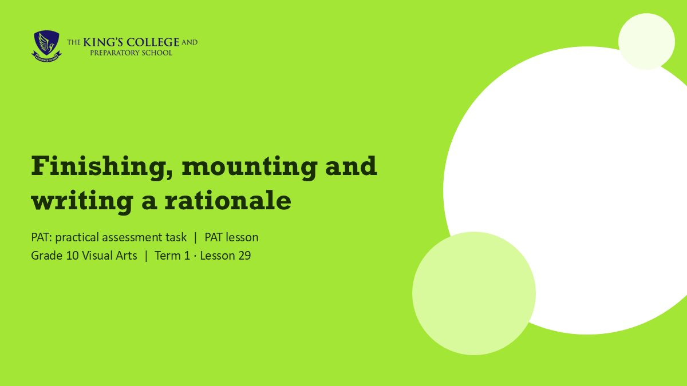

Term 1 · Lesson 29 · PAT lesson
Finishing, Mounting and Writing a Rationale
Start Here
Today I Will
- Trim and mount my still life neatly
- Plan a title and a 100 to 150 word rationale
- Present my work professionally for submission
Two learners hand in the same drawing: one is creased with a torn edge, one is cleanly mounted. Which one does the viewer trust more, and why?
Words to Know
| Word | Meaning |
|---|---|
| Rationale | A short piece of writing that explains your idea, process, influences and what you learnt. |
| Mount | A board or card that an artwork is fixed to, or framed by, so it is protected and presented neatly. |
| Window mount | A board with an opening cut out, placed over the artwork like a frame. |
| Presentation | How finished work is shown: clean, straight, labelled and protected. |
| Influence | An artist, artwork or idea that shaped the way you made your own work. |
Slides

Notes
Presenting work professionally: cleaning, mounting on black card and labelling; writing a title and a 100 to 150 word rationale (meaning, choices, skills and learning).
Mounting Step by Step
- Clean up: Erase stray marks and smudges with a putty rubber. Wash and dry your hands before you handle the work.
- Measure: Measure the work and plan even borders, usually a little wider at the bottom so the work does not look as if it is sliding down.
- Mark lightly: Mark the position on the board with light pencil dots and a ruler, not heavy lines.
- Teacher cuts: Only the teacher cuts board or trims with the craft knife, on a mat, against a metal ruler.
- Fix and label: Use glue stick or tape at the edges, not wet glue that wrinkles paper. Label the back: title, medium, size.
What a Rationale Answers
- Idea: What is your work about, and why did you choose this idea? Link it to the theme, All In.
- Process: How did you develop it? Mention your references, experiments and the media you tried and chose.
- Influences: Which artist or artwork influenced you? Say exactly what you learnt from them, such as colour or composition.
- What you learnt: What worked, what you would change and what skill you improved. Be honest and specific.
Good work deserves good presentation: clean, straight, labelled and explained.

Paul encourages us to work at everything with all our heart, as if working for the Lord. How could that change the way you finish a piece that you are tired of?
Practical
You need: Final still life, black mount board, glue stick or tape, ruler, pencil, VJ
Mount the Still Life and Draft the Title and Rationale
- Clean your work and check it against the rubric one last time.
- Measure and mark the borders on your mount board.
- Queue at the teacher's desk if anything needs cutting.
- Fix your work to the board and label the back.
- In your VJ, write four headings: idea, process, influences, what I learnt.
- Write two or three sentences under each heading.
- Read your draft to a partner and underline every art term you used.
Strong still lifes may be entered for the Creative Showcase (dates from the organisers).
Test Yourself
- Name the four parts of a rationale.
- Why is the bottom border of a mount often made slightly wider?
- Give one rule for using the craft knife in the art room.
Show answers
1. Idea, process, influences and what you learnt. 2. So the work looks balanced and does not appear to slide down the board. 3. Only the teacher uses it, on a cutting mat against a metal ruler, and it is closed and put away straight after use.
Finished Early?
Practise writing a rationale on work you have already finished.
- Choose your Activity 3 perspective drawing or your value scales.
- Write the four headings in your VJ: idea, process, influences, what I learnt.
- Write one or two sentences under each heading, in the first person.
- Underline every art term you used and add one more where a word is vague.